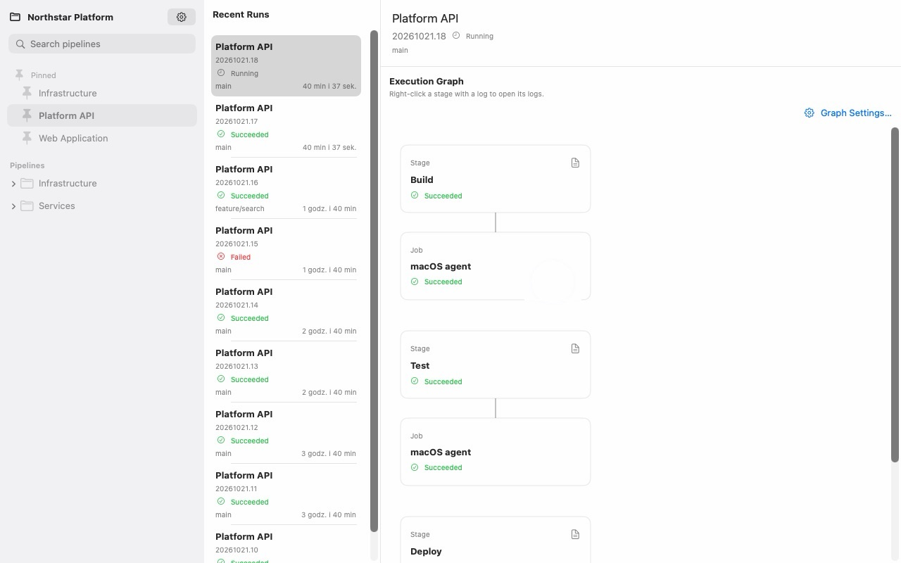
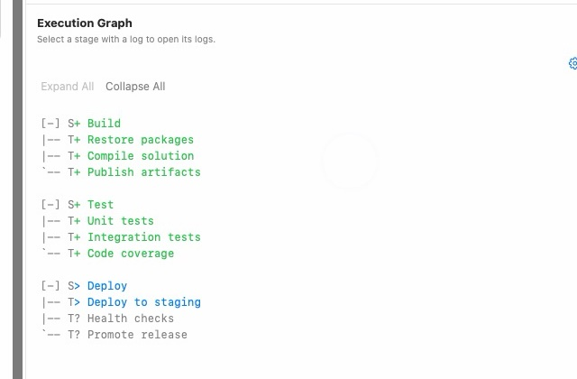
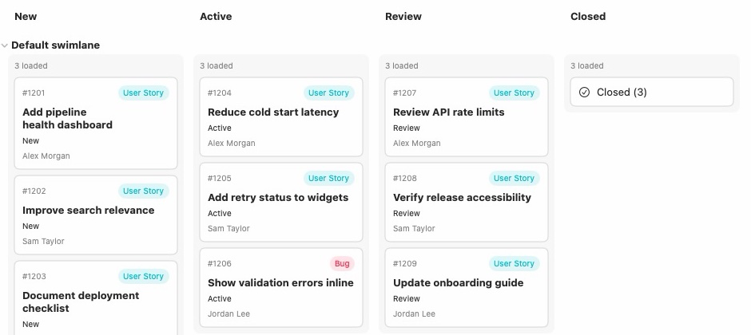

Azure DevOps Services · native on Apple platforms
Your pipelines, out of the browser.
Follow runs as a graph, read stage logs, and work through boards and work items in a native app for Mac, iPhone, iPhone Duo and iPad. Run status stays on your desktop, even with every window closed.
Now on the Mac App Store · iPhone and iPad coming later[-] S+ Build|-- T+ Restore and compile`-- T+ Unit tests [-] S> Test|-- T+ Integration · linux`-- T> Integration · macOS ▍ [-] S? Deploy · dev`-- T? Apply infrastructure
01 Pipelines
Every run, drawn the way it executed.
DevPulse reads the build timeline and draws it as stages, jobs and tasks. Stage order follows the compiled YAML of that exact run, so parallel branches sit side by side the way they ran.

-
Cards or ASCII, your call
Switch between a card graph and a text graph without leaving the run. The ASCII view keeps the same hierarchy and status colors, on every platform.
- Stage, Job, Task, Phase and Checkpoint visibility
- Vertical and Horizontal layouts
- Expand All and Collapse All
-
Logs in their own windows
Open the log of any stage that has one. Lines load in chunks of 500, and Check for New Lines continues from where you left off.

02 Work Items
Boards you can actually edit.
Browse a team board or a flat list, filter by person, type and state, and open any item in its own window. Saving is always explicit, and Azure DevOps rules stay authoritative.

A real editor, not a viewer
Edit fields, state and assignment, upload attachments and stage relationship changes. Every save checks the baseline revision, so a conflicting change is caught before it overwrites someone else's work.
Windows that stay out of the way
- Independent detail and editor windows
- Attachments up to 40 MB
- Closed items grouped in their own snapshot window
- Search by title or by ID, written as 12345 or #12345
04 Profiles new in 1.1
Several organizations, one app.
Save connection profiles and switch between them from the Change organization menu, without signing out. Several profiles can point at the same organization with different accounts.
- Each profile keeps its own personal access token
- A name and an accent color for every profile
- Pipeline status colors keep their meaning
Profile names, organization names and accent colors synchronize through iCloud. Credentials and authentication settings stay on each device.
05 Privacy
Your credentials stay put.
DevPulse talks to your Azure DevOps organization and to Apple's services. There is no developer-operated backend, no analytics and no advertising SDK.
Stored on the device
Personal access tokens live in the Keychain, scoped to one organization. Microsoft Entra tokens stay in MSAL's own Keychain cache.
Native sign-in
Microsoft Entra sign-in uses the system authentication session. DevPulse never reads browser cookies or reuses the Azure DevOps web session.
Only your organization
A personal access token is never reused across organizations. Switching organization rechecks access with local credentials only.
Details are in the privacy policy.
06 Platforms
One codebase, every screen.
Written in Swift with SwiftUI. The same graph, the same boards and the same explicit-save editor on each platform.
Mac
Multiple windows, desktop widgets, and background refresh while the app runs.
iPhone
A fixed top bar switches between Pipelines and Work Items, with editors in their own sheets.
iPhone Duo
Work Items browsing and item details on the unfolded display, verified in the simulator with a personal access token.
iPad
Split layouts, a resizable sidebar, and a full-screen run graph that keeps the selected pipeline.
07 Availability
Getting DevPulse
DevPulse for Mac is available on the Mac App Store worldwide. The iPhone and iPad version is not on the App Store yet.
Microsoft Entra sign-in needs an application registration. A personal access token works without one and is the quickest way to try the app.
- Mac Apple silicon, macOS 27
- iPhone and iPad iOS 27, iPadOS 27
- Service Azure DevOps Services
- Azure DevOps Server not supported
- Network internet access